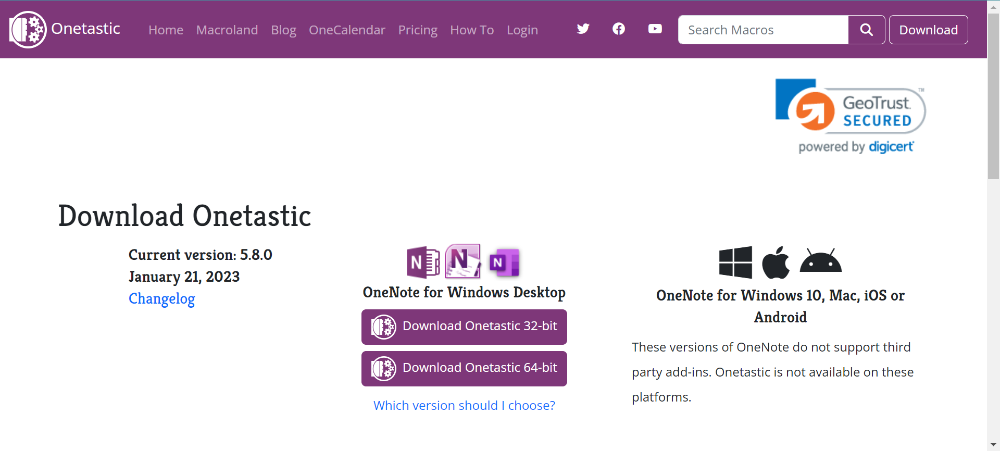
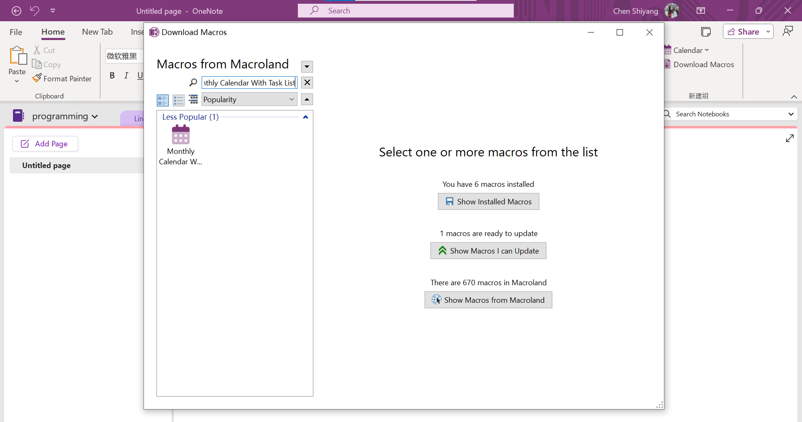
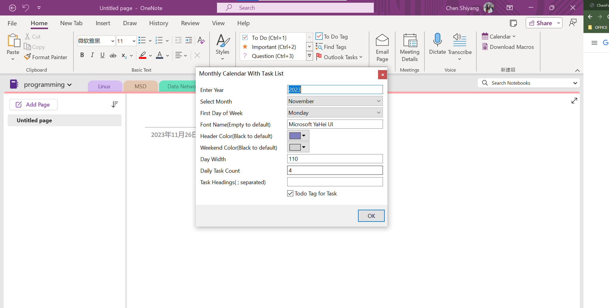
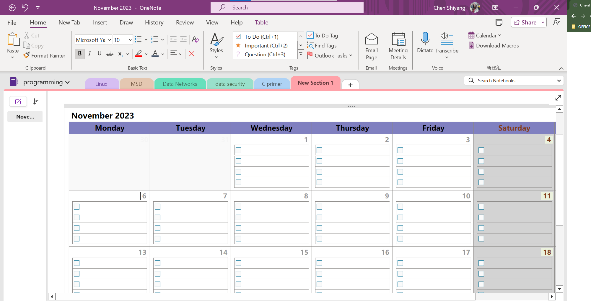

I would like to show you how to make a TO-DO List in monthly calander view in OneNote.
Go to the web and download the add-in.
OneTastic includes lots of add-in. You can try what you like. I would like to recommend Monthly Calendar With Task List. You can search it directly and intall it.
You should choose the year and monthly manually. Then you can decide Monday or Sunday to be the first day of week. Moreover, you can change the header color, font, weekend color and so on. On top of that, you can click the CHECKBOX, TOdo Tag for Task. Then you will get a simple but nice calendar.
Well-done! You get your calendar so quickly! You can plan your day throughout the month. When you complete a task, please remember to mark it! If the task is important, you can give it a tag to highlight. If you miss a task, you can give it a straikthrough line.
